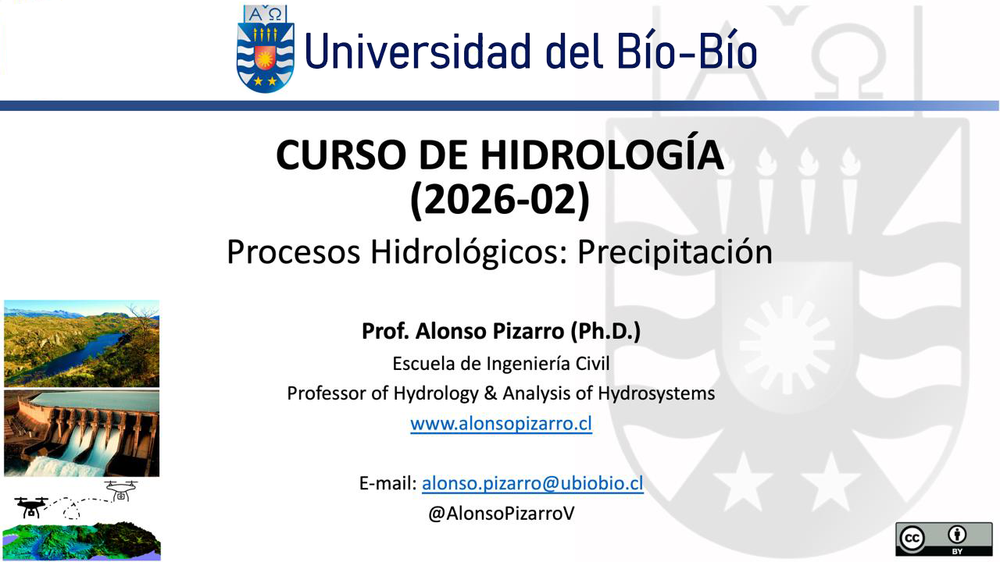

Code 450177 Universidad del Bío-Bío
Universidad del Bío-Bío
Universidad del Bío-Bío
Hydrology
A compulsory Civil Engineering course focused on quantifying mean and extreme water flows in natural systems. It integrates catchment characterization, hydrological data validation, frequency analysis, and methods for estimating water availability, rainfall, and design discharges.
Main topics

Teaching methodLectures, guided discussion, case analysis and contextual readings, collaborative work, and problem-solving assignments applied to catchments and hydrological datasets.